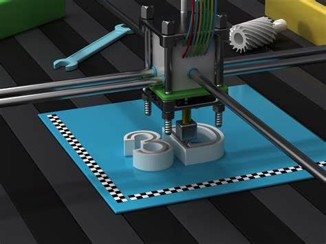

Embedded System, Additive Manufacturing, Cyber Security
Embedded System
It is a controller with a dedicated function within a larger mechanical or electrical system, often with real-time computing constraints. It is embedded as part of a complete device often including hardware and mechanical parts. Embedded systems control many devices in common use today. Ninety-eight percent of all microprocessors manufactured are used in embedded systems.
Modern embedded systems are often based on microcontrollers (i.e. microprocessors with integrated memory and peripheral interfaces), but ordinary microprocessors (using external chips for memory and peripheral interface circuits) are also common, especially in more complex systems. In either case, the processor(s) used may be types ranging from general-purpose to those specialized in a certain class of computations, or even custom designed for the application at hand.
A common standard class of dedicated processors is the digital signal processor (DSP).
Advantages of Embedded
➢ Easily Customizable
➢ Low power consumption
➢ Low cost
➢ Enhanced performance
Disadvantages of Embedded systems
➢ High development effort
➢ Larger time to market
BASIC STRUCTURE OF AN EMBEDDED SYSTEM
1.Sensor − It measures the physical quantity and converts it to an electrical signal which can be read by an observer or by any electronic instrument like an A2D converter. A sensor stores the measured quantity to the memory.
1.A-D Converter − An analog-to-digital converter converts the analog signal sent by the sensor into a digital signal.
3. Processor & ASICs − Processors process the data to measure the output and store it to the memory.
4. A Converter − A digital-to-analog converter converts the digital data fed by the processor to analog data.
5. Actuator − An actuator compares the output given by the D-A Converter to the actual (expected) output stored in it and stores the approved output.

CYBERSECURITY
It is the protection of computer systems from the theft of or damage to their hardware, software, or electronic data, as well as from the disruption or misdirection of the services they provide.
Due to its complexity, both in terms of politics and technology, cybersecurity is also one of the major challenges in the contemporary world. Cybersecurity is often confused with information security but it focuses on protecting computer systems from unauthorized access or being otherwise damaged or made inaccessible.
Information security is a broader category that looks to protect all information assets, whether in hard copy or in digital form. The term cybercrime is used to describe an unlawful activity in which computer or computing devices such as smartphones, tablets, Personal Digital Assistants (PDAs), etc. which are standalone or a part of a network are used as a tool or/and target of criminal activity. It is often committed by the people of destructive and criminal mindset either for revenge, greed or adventure.
CYBERSECURITY MEASURES
The following are some security measures to be taken to prevent cybercrimes:
➢ Staff awareness training: - Human error is the leading cause of data breaches, so you need to equip staff with the knowledge to deal with the threats they face. Training courses will show staff how security threats affect them and help them apply best-practice advice to real-world situations.
➢ Application security: - Web application vulnerabilities are a common point of intrusion for cybercriminals. As applications play an increasingly critical role in business, it is vital to focus on web application security.
➢ Network security: Network security is the process of protecting the usability and integrity of your network and data. This is achieved by conducting a network penetration test, which scans your network for vulnerabilities and security issues.
➢ Leadership commitment: Leadership commitment is the key to cyber resilience. Without it, it is very difficult to establish or enforce effective processes.
➢ Password management: You should implement a password management policy that provides guidance to ensure staff create strong passwords and keep them secure.
TYPES OF CYBERSECURITY THREATS
1.Ransomware: It is a type of malicious software. It is designed to extort money by blocking access to files or the computer system until the ransom is paid.
1. Malware: It is a type of software designed to gain unauthorized access or to cause damage to a computer.
1. Social engineering: It is a tactic that adversaries use to trick you into revealing sensitive information. They can solicit a monetary payment or gain access to your confidential data
Phishing: It is the practice of sending fraudulent emails that resemble emails from reputable sources. The aim is to steal sensitive data like credit card numbers and login information. It’s the most common type of cyber-attack. You can help protect yourself through education or a technology solution that filters malicious emails.
BENEFITS OF CYBERSECURITY
Business protection against malware, ransomware,phishing, and social engineering.
Protection for data and networks
Prevention of unauthorized users
Improves recovery time after a breach.
Protection for end-users.
Improved confidence in the product for both developers and customers.
ADDITIVE MANUFACTURING
➢ The American Society for Testing and Materials (ASTM) - “Additive manufacturing, also known as 3D printing, uses computer-aided design to build objects layer by layer.”
➢ Wikipedia says, -“Today, the precision, repeatability, and material range has increased to the point that 3D printing is considered as industrial production technology, with the name of additive manufacturing.”
➢ Author Deve Turbide puts it simply, suggesting that additive manufacturing is “the industrial version of 3D printing”.
“Additive manufacturing” (AM) is a big-picture term more at home in the boardroom than the factory floor or garage. Naturally, AM separates itself from older, subtractive technologies like milling. Otherwise, the term is less about the 3D printer itself, and more about the manufacturing process transformed by 3D printing.
3D PRINTING:IT'S ALL ABOUT THE PRINTER
Today our concept of “3D printing” is much broader, but the term is often associated with filament-based plastic printers, which are the pride and joy of many a hobbyist and self-described maker. But there are also binder jet printers, laser metal 3D printers, as well as glass and clay 3D printers.
More entry 1 content goes here. Aliquam erat volutpat. Curabitur vitae neque non felis dignissim cursus eu vel elit. In finibus risus elit, non gravida neque tincidunt id. Sed id venenatis libero. Nam fermentum nunc a risus pulvinar, et suscipit odio elementum. Cras a justo tincidunt, vulputate odio vitae, feugiat lectus. Vivamus fringilla ullamcorper odio, a blandit turpis. Pellentesque ultrices risus vitae facilisis feugiat. Praesent accumsan, nisl vel bibendum sagittis, quam orci semper enim, nec dapibus enim odio non dolor.